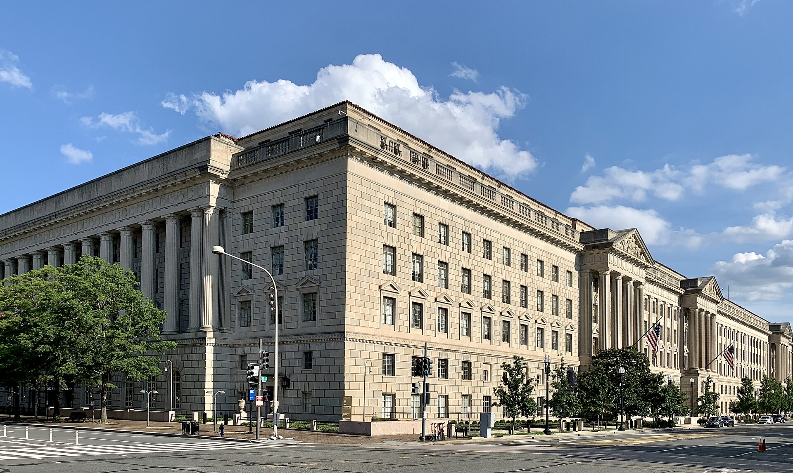
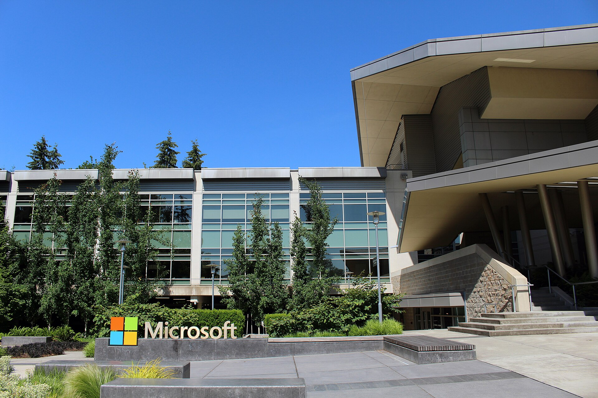

Vol. I · No. 40 · Saturday, June 27, 2026 · 15 items · ~15 min read
American warplanes strike Iran in the first real test of the week-old ceasefire; a report that OpenAI may wait until 2027 to go public drags the tech tape to a fifth straight loss; Washington brokers an Israel-Lebanon framework that ties any pullback to Hezbollah's disarmament; and Commerce quietly clears Anthropic's most powerful model to return.
The Splash · The World · Strait of Hormuz · cross-spectrum LCR
U.S. warplanes strike Iran after a Guard drone hits a ship in Hormuz, the first real test of the ceasefire
A U.S. Navy carrier transits the Persian Gulf. Central Command said American aircraft struck Iranian missile and drone storage and radar sites on June 26. — Wikimedia Commons / U.S. Navy, public domain
American aircraft struck Iranian missile and drone storage locations and coastal radar sites on Friday, June 26, U.S. Central CommandInstitutionThe U.S. military command responsible for the Middle East, known as CENTCOM. It announced and ran the June 26 strikes on Iran, calling them a "powerful response" to Tehran's "dangerous behavior." said in a statement posted to social media, calling the operation a "powerful response" to Iran's "dangerous behavior." The strikes followed an IRGCInstitutionIran's Islamic Revolutionary Guard Corps, the parallel military that controls Gulf naval operations. U.S. officials attributed the drone attack on the cargo ship to it. drone attack a day earlier on the Singapore-flagged cargo ship Ever Lovely, which was damaged but able to continue; the U.S. said it knocked down three other drones aimed at vessels transiting the Strait of HormuzPlaceThe narrow chokepoint between Iran and Oman through which roughly a fifth of the world's seaborne oil passes. Any disruption moves crude and shipping-insurance prices worldwide..
President Trump said Iran "shot at least four One Way Attack Drones at Ships transversing the Strait of Hormuz," and called it "a foolish violation of our Ceasefire Agreement." The exchange is the first serious test of the 14-point memorandumConceptThe understanding Trump and Iran's president signed June 17 to wind down the war. Its fifth paragraph commits Iran to use "best efforts" to ensure free, toll-free passage through Hormuz for 60 days. Trump and Iran's president signed June 17, whose fifth paragraph commits Tehran to use its "best efforts" to keep the strait open and toll-free for 60 days. Iran's Revolutionary Guard said it answered with strikes on U.S. installations in the region, and CBS reported Iranian drones aimed at Bahrain after the American attack.
Markets read the clash as contained rather than the start of a wider war: crude fell about 4% on Friday toward $69 a barrel, the lowest since late February, as tankers kept transiting the strait and Gulf exports recovered toward three-quarters of prewar levels. The week-old deal is now a live question of whether the world's most important oil corridor stays open in practice, not just on paper, with each side claiming the other broke the terms.
"Obviously, this is a foolish violation of our Ceasefire Agreement."
— President Trump, on Iran's drone attack in the Strait of Hormuz, June 26
Corporate · San Francisco
OpenAI leans toward waiting until 2027 to go public, and the tech tape buckles
OpenAIInstitutionThe maker of ChatGPT, run by Sam Altman. It filed confidentially with the SEC on June 8 and is weighing one of the largest IPOs ever, at a targeted valuation near $1 trillion. is leaning toward holding its initial public offering until 2027, off a previously expected fall-2026 listing, The New York Times reported, with people involved citing recent tech volatility and the slide in SpaceXInstitutionElon Musk's rocket company, whose record IPO this month raised more than $85 billion at a $1.77 trillion debut valuation before the stock sagged, cooling appetite for the next mega-listing. shares after its record debut. The timeline would put OpenAI public after rival Anthropic, whose own listing it expects could come as early as October. Chief executive Sam Altman is said to view a valuation below roughly $1 trillion as a non-starter, and chief financial officer Sarah Friar supports waiting.
The report moved the market on Friday, June 26. Shares of Goldman SachsInstitutionThe Wall Street bank working with Morgan Stanley to lead the OpenAI offering. A delayed mega-IPO defers the fees and the marquee mandate, which is why the news pressured both banks' stocks. fell as much as 4.8% and Morgan Stanley as much as 4.1%, the two banks chasing the mandate, while chip and AI names led a broader slide. Both labs have filed confidentially with the SEC; OpenAI has reportedly not yet begun investor meetings, and prediction markets now price a high chance of no listing before year-end.
The World · Washington · cross-spectrum LLCR
Israel and Lebanon sign a U.S.-brokered framework tying any pullback to Hezbollah's disarmament
Secretary of State Marco RubioPersonU.S. Secretary of State, who hosted the Washington talks and announced the framework. He cast it as a "first step" toward a durable Israel-Lebanon peace. announced a trilateral framework agreement on Friday, June 26, after days of U.S.-mediated talks, as Israel's and Lebanon's ambassadors signed at the State Department. The deal sets a "sequenced process" in which the Lebanese army restores "effective sovereign authority over all Lebanese territory, pending the verified disarmament of non-state armed groups," a plain reference to HezbollahInstitutionThe Iran-backed Lebanese militia and political party. It was not a party to the deal and insists it must disarm only south of the Litani River, not nationwide., before Israel will "progressively redeploy" out of the south. It also creates a U.S.-facilitated Military Coordination Group to oversee the steps.
The framework does not require Israel to withdraw from the roughly one-fifth of Lebanese land it occupies; Prime Minister Netanyahu said the buffer zone stays "until Hezbollah disarms and as long as there is a threat." Hezbollah, not at the table, rejected it outright: secretary-general Naim QassemPersonHezbollah's secretary-general. He called the framework "null" and a "humiliation," and warned that tying an Israeli pullback to disarmament crossed the group's "red lines." called the deal "null" and a "humiliation," and an allied lawmaker warned that enforcing it could mean civil war.
Artificial Intelligence
Capability, capital, and the cost of running the machine
AI · Washington
Commerce clears Anthropic's most powerful model to return, to about 100 vetted firms

The Commerce Department's headquarters in Washington; Secretary Howard Lutnick signed the letter clearing Mythos 5's limited return. — Wikimedia Commons / CC BY-SA
The U.S. government granted AnthropicInstitutionThe AI lab behind the Claude models, reportedly weeks into a confidential IPO process. Its most capable tier sits at the center of Washington's new pre-release controls on frontier systems. permission on Friday, June 26, to re-release its most powerful model, Claude Mythos 5, to roughly 100 companies and federal agencies, two weeks after a Commerce export-control directive forced the lab to disable access for every customer. "I have determined that appropriate safeguards are in place to permit certain trusted partners to access the Claude Mythos 5 Model," Commerce Secretary Howard LutnickPersonU.S. Commerce Secretary and the administration's lead on AI export controls. He authorized both the original Mythos 5 blackout and now its limited return. wrote in the authorizing letter.
Many of the cleared recipients belong to Anthropic's roughly 100-institution "Project Glasswing" cohort. The letter does not lift the block on FableConceptAnthropic's less-powerful Claude tier, below Mythos 5. It remains blocked under the Commerce directive even as the top model is cleared, a sign the controls are calibrated to capability., the less-powerful sibling model, which stays offline. The original directive followed national-security and cybersecurity alarms, with reporting tying the concern to a purported jailbreak that left the models open to misuse. The reversal keeps the frontier on a government leash even as it loosens the knot: access is a privilege the state grants partner by partner, not a default the lab controls.
AI · New York
"Tokenmaxxing" gives way to budgets, and OpenAI and Anthropic feel the squeeze
Enterprise customers are shifting from "tokenmaxxing," using as much frontier AI as possible, toward efficiency and clearer return on investment, a change that could slow revenue growth at OpenAI and Anthropic, CNBC reported June 26. The anecdotes are pointed: Uber's chief technology officer disclosed the company burned through its entire annual AI budget in four months and then imposed spending tiers starting at a $1,500-a-month base, and the startup LindyInstitutionAn AI agent startup. Its chief executive said the company moved all of its traffic off Anthropic's Claude to DeepSeek, a cheaper Chinese open-weight model, to cut costs. moved all of its traffic off Anthropic's Claude to the cheaper Chinese model DeepSeekInstitutionA Chinese AI lab whose low-cost, open-weight models have become the default budget alternative for companies trying to escape frontier-lab pricing..
The reframing the industry now uses is "value-maxxing": buying the cheapest model that clears the bar, not the most capable one. It lands the same week both labs' confidential IPO filings surfaced and investor mood on AI returns visibly cooled, sharpening a question the public-market debut will have to answer, whether frontier inferenceConceptRunning a trained model to answer users, the recurring cost that scales with every query. When customers optimize their spend, it is the labs' usage revenue that bends. revenue compounds or plateaus once customers start optimizing their spend.
Markets & Deals
A fifth losing session, a chip merger, and a silver debut
Corporate · New York
The Nasdaq logs a fifth straight loss as money rotates out of AI and into defensives
The New York Stock Exchange. The S&P 500 fell about 2% on the week as the AI trade wobbled. — Wikimedia Commons / CC BY-SA
The Nasdaq CompositeInstitutionThe tech-heavy U.S. stock index. Its five-session losing streak reflects how concentrated this market is in the same AI and chip names that led on the way up. closed at 25,297.62 on Friday, June 26, down 0.24% and its fifth consecutive losing session, off 4.6% on the week. The S&P 500 finished essentially flat at 7,354.02 but shed about 2% over the five days; the Dow held up better, down 44.51 points on the day but up about 0.6% on the week. The Russell 2000ConceptThe benchmark for U.S. small-cap stocks. It rose 0.71% Friday as investors rotated out of mega-cap tech, and its semi-annual reconstitution took effect after the close. rose 0.71%, the relative winner as cash moved out of large-cap tech, with the 10-year Treasury yield near 4.38%.
The proximate trigger was the report that OpenAI may delay its listing, which dragged chip and AI names and prompted a defensive rotation. The macro backdrop did not help: the Fed's preferred inflation gauge, the PCE price indexConceptPersonal consumption expenditures, the inflation measure the Federal Reserve targets. May's reading ran hotter than expected, complicating the case for rate cuts., rose to a 4.1% annual rate in May, its hottest since April 2023, with core PCE at 3.4%. A market this concentrated in a handful of AI winners moves hard when their story is questioned.
Corporate · Scottsdale
onsemi strikes its biggest-ever deal, a ~$7B all-stock buy of Synaptics
onsemiInstitutionThe Arizona chipmaker formerly known as ON Semiconductor (Nasdaq: ON), specializing in power and sensing chips for cars and industry. This is its largest acquisition ever. agreed to acquire SynapticsInstitutionA maker of touch, connectivity, and edge-AI chips for consumer and embedded devices (Nasdaq: SYNA). onsemi is buying its "edge" compute and human-machine-interface portfolio. in an all-stock deal valued at about $7 billion in enterprise value, the company said, its largest acquisition ever. Synaptics holders would receive 1.350 onsemi shares for each share they own, a premium of roughly 19% to the ten-day volume-weighted average priceConceptVWAP: the average trading price weighted by volume over a window. Boards quote premiums against it, rather than a single day's close, to present a smoother, fairer benchmark. of both stocks.
The logic is "physical AI": onsemi is pairing its power and sensing chips with Synaptics' edge-compute and connectivity portfolio to target AI features that run on devices rather than in the data center. The deal is expected to close in mid-2027, subject to Synaptics shareholder and regulatory approval, and adds another mid-cap semiconductor tie-up to a busy year for chip M&A.
Corporate · New York
A Kaplan-backed silver miner, Sinda, debuts on the NYSE
Sinda Ltd. priced 17.75 million shares at $12.00 each, the middle of its $11.25-to-$13.25 range, and began trading on the New York Stock Exchange under the ticker "SIND" on Friday, June 26. Combined with a concurrent private placementConceptShares sold directly to selected institutional investors alongside the public offering, rather than through the IPO book. It lets an issuer raise additional capital without enlarging the public float., the Mexico-focused miner raised about $323 million. It is a portfolio company of The Electrum GroupInstitutionThe natural-resources investment firm led by metals investor Thomas Kaplan, a long-time precious-metals bull. Sinda is its silver play, taken public into a firm bullion market., the natural-resources firm run by metals investor Thomas Kaplan.
Morgan Stanley, Scotiabank, and BMO led the offering, with Canaccord, Citigroup, and RBC as additional bookrunners; the deal was pulled forward from an expected June 30 pricing and is set to close June 29. Sinda's pitch rests on Mexican silver assets carrying hundreds of millions of silver-equivalent ouncesConceptA way of stating a deposit's total metal content by converting gold, lead, and other byproducts into their silver-price equivalent, so a mixed resource can be quoted as one headline figure. in resources, a leveraged bet on bullion brought to public investors at a moment of strong precious-metals prices.
Law & the Courts
A quiet opinion day, and a rare housekeeping note from the marble palace
News · Washington · cross-spectrum LLCR
"A misunderstanding": the Court takes the rare step of walking back Alito's retort to Sotomayor
Justice Samuel Alito. The Court said his from-the-bench reaction the day before rested on a misunderstanding. — Wikimedia Commons / Supreme Court, public domain
The Supreme Court issued an unusual public statement on Friday, June 26, saying that Justice Samuel AlitoPersonThe senior conservative justice, appointed by George W. Bush in 2006. He wrote both of the term-closing immigration majorities that drew Sotomayor's dissent.'s testy reaction from the bench a day earlier had been based on "a misunderstanding on Justice Alito's part." On Thursday, after Justice Sonia SotomayorPersonThe senior liberal justice, appointed by Obama in 2009. Reading a dissent aloud is her sharpest available signal of disagreement with a majority. read a roughly ten-minute oral dissentConceptReading a dissent aloud from the bench, rather than only filing it in writing, is the Court's traditional signal of unusually deep disagreement with the majority. in the asylum-metering case, Alito said, "There is much that I would have added to my bench statement had I known there would be a dissent read," implying he had been caught off guard.
He had not been. The Court's statement clarified that Sotomayor's chambers notified Alito in advance that she planned to read from the bench, correcting the impression his remark left. That the Court would comment at all on an internal courtroom exchange is itself the news, a rare on-record cleanup from an institution that almost never narrates its own dynamics, and a small window onto the friction inside a 6-3 majority during the term's most charged decisions. The next opinions are expected Monday, June 29, with the term's biggest cases still pending.
Framing noteLeft-leaning coverage (NBC) kept the focus on tensions spilling into public view as the majority hands the administration immigration wins; center-right framing (Newsweek) emphasized that the Court's own statement clears Alito of acting improperly.
The World
A record barrage, a rising toll, and a continent baking
News · Kyiv · cross-spectrum LLR
Ukraine launches one of the war's largest drone barrages as Zelensky opens a "40-day" campaign
The Kerch Strait bridge to occupied Crimea; Ukraine said its overnight strikes hit naval and air-defense targets in the area. — Wikimedia Commons / CC BY-SA
Ukraine sent more than 660 drones overnight into Friday, June 26, across 12 Russian regions and occupied Crimea, one of the largest assaults of the four-year war; Russia's Defense Ministry said it shot all 660 down, topping the prior 2026 high of 556 on May 17. Kyiv said it struck two military vessels and several air-defense systems near KerchPlaceThe eastern Crimean port at the Kerch Strait, site of the bridge linking Russia to the occupied peninsula. Its naval and logistics infrastructure is a recurring Ukrainian target., along with airfields and logistics. The barrage came hours after President Zelensky said on X he had ordered a "40-day influence operation" by the SBUInstitutionUkraine's domestic security and intelligence service, which runs deep-strike and sabotage operations inside Russia. Zelensky tasked it with a 40-day pressure campaign to force an end to the war. to force Moscow to end the war.
Russia answered with missiles and drones across Kyiv, Odesa, Zaporizhzhia, and Sumy that wounded at least 19 people, including a nine-year-old, and set an office building ablaze in central Zaporizhzhia. Ukraine's air force said it downed 174 of 189 incoming Russian drones, though four of seven Iskander-MConceptA Russian short-range ballistic missile that is fast and hard to intercept. That four of seven got through underscores the gap Ukraine's air defenses still cannot fully close. ballistic missiles got through. The exchange shows both sides escalating the long-range war even as diplomacy stalls.
News · Caracas · cross-spectrum LLL
Venezuela's earthquake toll passes 920 as the rescue window closes
The death toll from this week's twin earthquakes in Venezuela climbed above 920 by June 26, with more than 3,300 injured and over 50,000 people reported missing as the search neared 72 hours, officials said, a steep rise from the roughly 235 confirmed a day earlier. The Wednesday-evening shocks, a magnitude 7.2 followed seconds later by a 7.5, toppled buildings across the capital region. The coastal state of La GuairaPlaceVenezuela's coastal state north of Caracas, home to the country's main international airport. It was the hardest-hit zone, with hundreds of residential buildings collapsed. was among the worst hit, with more than 250 residential buildings collapsed and Simon Bolivar International AirportPlaceThe main airport serving Caracas, located in coastal La Guaira. Heavy damage there severs the capital's principal air link just as international rescue teams need to arrive. heavily damaged.
More than 30 international search teams and over 14,000 officials are working the rubble in La Guaira. The USGSInstitutionThe U.S. Geological Survey, whose PAGER system models quake impact. It warns the Venezuela toll could ultimately rise into the tens of thousands, a sign the count is far from final. impact model warns the toll could eventually climb much higher, into the tens of thousands, as crews reach districts still cut off three days on.
News · Amsterdam · cross-spectrum LLLC
A record heat dome bakes Western Europe; the Netherlands sets an all-time June high
The Netherlands recorded 39.4 degrees Celsius (102.9 Fahrenheit) in the village of EllPlaceA village in the southern Dutch province of Limburg. Its weather station logged the national June record, the kind of inland southern site where continental heat domes peak. on the afternoon of June 26, breaking its all-time June record of 37.9 set in Venlo in 1947, as a heat domeConceptA high-pressure ridge that traps hot air over a region for days, suppressing cloud and rain so temperatures build. This one pulled North African air across Western Europe. pushed temperatures 14 to 18 degrees above late-June norms. Austria is forecast to reach 39 degrees in Vienna on June 27 and 28, with the highest heat warnings in the country's northeast.
France has linked roughly 50 deaths to the heat, many of them drownings of people seeking relief in rivers and lakes, and red alerts for extreme fire danger stretch from Berlin to Prague. The WMOInstitutionThe World Meteorological Organization, the UN's weather and climate agency. It noted national June records falling across the continent as the dome expanded east. noted records falling across the continent as the high-pressure system, after peaking June 20 to 23, shifted east.
Entertainment & EASL
A studio reset, private equity in the arena, and a soft cape
Culture · Redmond
Xbox's fiscal-year-end studio reset begins, with layoffs starting at Compulsion

Microsoft's Redmond campus. Bloomberg's Jason Schreier reported the Xbox studio cuts are timed to the fiscal year's June 30 close. — Wikimedia Commons / CC BY-SA
Layoffs began on June 25 at Compulsion GamesInstitutionThe Montreal studio behind South of Midnight and We Happy Few, owned by Microsoft. It is the first Xbox studio hit in the latest round of cuts., the Microsoft-owned studio behind South of Midnight, with leadership preemptively offering staff exits ahead of formal cuts expected in July, Bloomberg's Jason SchreierPersonBloomberg's lead games-industry reporter, the most reliable source on internal moves at the major publishers. His reporting drives most coverage of Xbox's restructuring. reported. He characterized the broader cuts, timed to the close of Microsoft's fiscal year on June 30, as a potential "bloodbath" across the division.
Other studios are in active negotiation rather than confirmed shutdown: Schreier named Double Fine, reportedly in spinoff talks, and Ninja Theory, the Hellblade developer, and pushed back on reports that any had already been fully closed. The reset follows new Xbox chief Asha SharmaPersonThe Xbox division head who issued a June reset memo citing years of revenue decline and an overextended studio system, the framework behind the current cuts.'s memo describing an overextended studio system, with critics arguing that Game PassConceptMicrosoft's subscription that bundles games for a monthly fee. Detractors say its accounting undercounts the value of the studios' own hits, helping justify cuts. accounting has undercut the division's own successes.
Culture · Cleveland
The Cavaliers near a sale of a minority stake to Blue Owl at a $5.5B valuation
The Cleveland Cavaliers are nearing a deal to sell a 5% to 10% limited-partner stake to the private-equity firm Blue Owl CapitalInstitutionA large alternative-asset manager that has become one of the most active institutional investors in the NBA, already holding minority stakes in four other teams., Sportico and the Detroit News reported June 25 and 26, at a valuation of about $5.5 billion that combines the NBA team and the Cleveland WNBA expansion club set to begin play in 2028. Blue Owl already holds minority stakes in four other NBA clubs.
Owner Dan GilbertPersonThe Quicken Loans founder who bought the Cavaliers in 2005 for $375 million. He is selling a minority slice while keeping majority control., who bought the team in 2005 for $375 million, would retain majority control; he hired Allen & CompanyInstitutionThe boutique investment bank known for media and sports deals and its annual Sun Valley conference. It is advising Gilbert on selling up to 15% of the franchise. to explore selling up to 15%. The deal extends the rush of institutional capital into the NBA since the league eased its ownership rules to admit private-equity funds.
Culture · Los Angeles
"Supergirl" opens soft, with Milly Alcock outshining her own movie
DC StudiosInstitutionThe Warner Bros. unit run by James Gunn and Peter Safran, rebuilding a connected superhero slate. Supergirl is an early test of whether the relaunch can travel beyond last year's Superman.' Supergirl earned about $18 million on opening Friday, June 26, from 3,602 theaters, landing second behind Toy Story 5, with a Saturday-morning projection of a three-day opening around $38 to $40 million, the low end of tracking that had run as high as $50 million. It took $7.8 million in Thursday previews against a reported net budgetConceptA film's production cost after tax credits and rebates, before marketing. A ~$180 million net budget means the studio needs a large multiple of an opening weekend to break even. of roughly $170 to $186 million.
The figure is less than a third of last year's Superman opening, and the reviews split, with a Rotten Tomatoes score near 57% on about 148 reviews, though critics were near-unanimous in praising star Milly AlcockPersonThe Australian actress known for House of the Dragon, here in her first lead film role as Supergirl. The reviews credit her even where they fault the movie.. Toy Story 5, after a franchise-record $160 million debut, is projected to take $80 to $90 million in its second weekend.
Compiled by Matthew Yellin · mattyellin.com · Est. May 2026 · A cross-spectrum brief drawn each morning from wires, filings, and the trade press